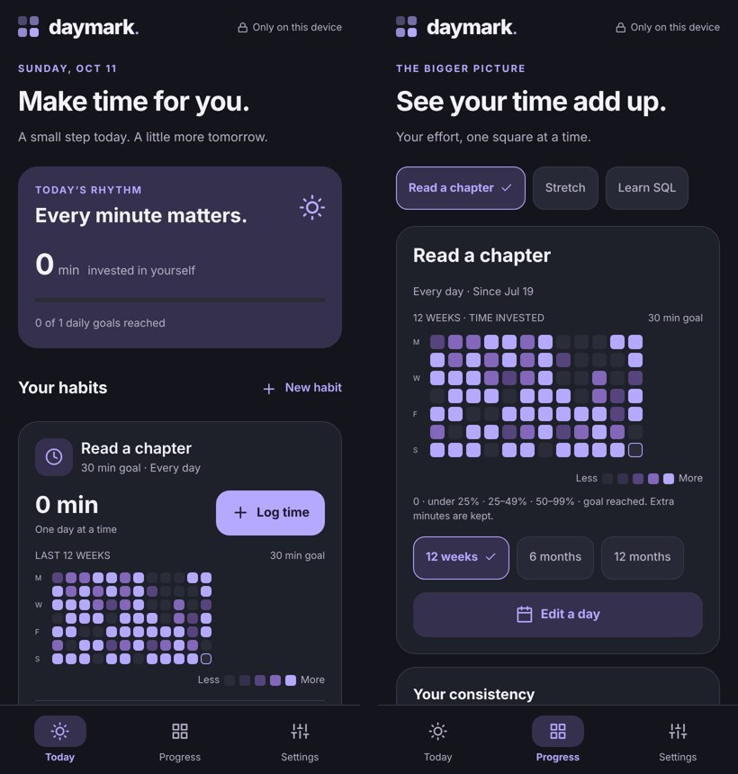

What it does
Small effort, made visible
- Track a habit as a simple check-in, or as time spent against a daily goal.
- Pick the days it's scheduled; unscheduled days never break a streak.
- A heatmap of the last 12 weeks, 6 months or a year — partial sessions show as lighter squares.
- Light, dark and four colour themes, larger text and reduced-motion options.
- No account, no ads, no tracking. Your data stays on your device.

Why it's finished
Done means the basics work
The goal was a working habit tracker, and it got there: create a habit, log it, see the heatmap, close the app and find everything still there. 15 automated tests cover the tricky parts — calendar dates, leap years, streaks on selected weekdays and data that can't be silently lost.
I stopped before the Google Play release (store fees, plus testing the app and its Android home-screen widget on real phones) to focus on other work, so it's archived rather than abandoned. The web version below is the full app.
Use it
Open it on your phone or computer
- Open nathanwoork.github.io/projects/daymark/app.
- On a phone, use your browser's "Add to Home screen" to keep it like an app.
- Habits are saved in that browser only — clearing site data will remove them.